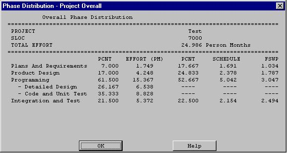
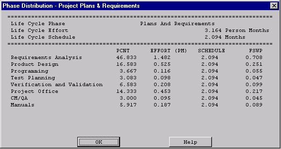
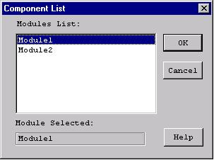
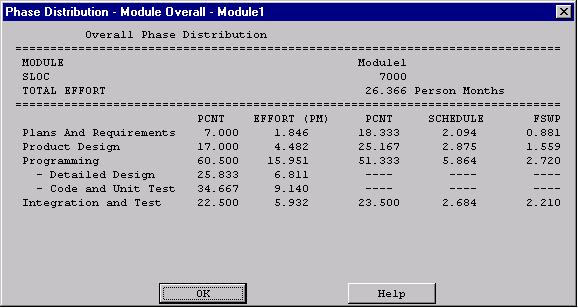
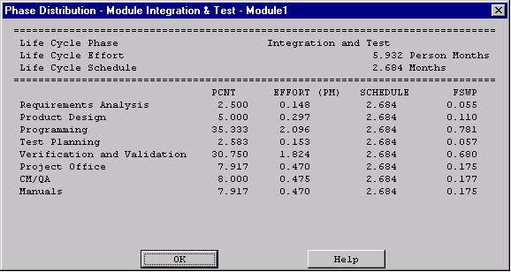

FIGURE 6-7 Phase Distribution Module Sub-menu
The Phase Distribution is one of the menu selections in the menu bar that can be accessed by either clicking upon Phase Distribution in the main menu. Its function is to display a breakdown of the software effort and schedule into the phases of the development cycle. These phases are plans & requirements, design, programming and integration & test. These phases are described as follows:
Plans & Requirements - In this phase, a statement for the required functions, interfaces and performance is created. These expectations are used to define the capabilities of the software product as expressed by representatives of all interested parties.
Product Design - In this phase, a hardware/software architecture, control structure and data structure for the product are defined. A draft of the user's manual and test plans are also created during this phase.
Programming - In this phase, the design of the previous phase is implemented in the creation of complete sets of software components.
Integration & Test - In this phase, the various software components are brought together in order to achieve a properly functioning software product composed of loosely coupled modules. The requirements as defined in the first phase are used to determine the fitness of the delivered product.
The phase distribution menu has two selections: project phase distribution and module phase distribution. The project phase distribution allows the user to view the development phases for the entire project all together or individually. The module phase distribution allows the user to view the development phases for a particular module either all together or individually. These two variations of phase distribution are discussed further in this chapter under sections 6.1 and 6.2 in this chapter.
NOTE: These phase distribution estimates are retained from the COCOMO81 model, which assumed a waterfall (sequentially phased) process model. If your project's process model is not a waterfall, these phase distributions are either inapplicable or need to be reinterpreted.
FIGURE 6-1 Phase Distribution Sub-menu
In order to view the phase distribution of an entire project, the user can click on the Project Phase Distribution button under the Phase Distribution menu (see FIGURE 6-1). Four formats for viewing will appear in another menu: overall phase, plan & requirements, programming, and integration & test. Each of these menu selections will be discussed in sections 6.1.1 - 6.1.4, respectively. The phase distribution of plan & requirements, programming and integration & test are broken down into sub-phases. These phases include: requirements analysis, product design, programming, test planning, verification & validation, project office, CM/QA, and manuals. For each of these sub-phases the percentage of the phase, the estimated effort, the estimated schedule, and the estimated FSWP is displayed. A description of each of these sub-phases follows:
Product Design: Determination, specification, review and update of hardware-software architecture, program design, and database design.
Programming: Detailed design, code, unit test, and integration of individual computer program components. Includes programming personnel planning, tool acquisitions, database development, component level documentation, and intermediate level programming management.
Test Planning: Specification, review, and update of product test and acceptance test plans. Acquisition of associated test drivers, test tools, and test data.
Verification & Validation(V&V): Performance of independent requirements validation, design V&V, product test, and acceptance test. Acquisition of requirements and design V&V tools. "Are we building the product right?" and "are we building the right product?"
Project Office Functions: Project level management functions. Includes project level planning and control, contract and subcontract management, and customer interface.
Configuration Management and Quality Assurance (CM/QA): Configuration management includes product identification, change control, status accounting, operation of program support library, development and monitoring of end item acceptance plan. Quality assurance includes development and monitoring of project standards, and technical audits of software products and processes.
Manuals: Development and update of users' manuals, operators' manuals and maintenance manuals.
The overall phase distribution allows the user to view an entire project's estimated effort, schedule and number of personnel needed for phase completion. Upon clicking on "Overall Phase," a window will be displayed showing the phase breakdown of the current project in COCOMO (see FIGURE 6-2). This window displays the project name, project SLOC, and the total estimated effort for the project. Looking at FIGURE 6-1, this information can be seen in the upper left corner of the window.

FIGURE 6-2 Phase Distribution window displaying a sample project's overall
phase distribution
Note: The programming phase has been broken down into two additional phases: "Detailed Design" and "Code and Unit Test." The detailed design is a follow-up to the product design phase. In this sub phase, those points developed in the product design are elaborated to a point necessary to breakdown agreed functions into units necessary for coding. The code and unit test sub-phases house the actual coding effort of the individual units of code. The testing of these units (upon completion) is also encompassed within this sub phase.
6.1.2 Plans and Requirements Project Phase Distribution
The plans and requirements phase distribution allows the user to view the components of this particular phase. When the Plans and Requirements distribution is chosen from the Project Phase distribution menu, the window shown in FIGURE 6-3 is displayed. This window displays the following information: project name, the total project SLOC, the total estimated project effort, and the total estimated project schedule. In addition the window displays the estimated effort for the activities of requirements analysis, product design, programming, test planning, verification & validation, project office, CM/QA, and manuals. These activity estimates are accompanied with a percentage of the phase effort that they encompass, the estimated effort, schedule and FSWP for the activity's completion as shown in FIGURE 6-3. To exit from this window click the OK button.

FIGURE 6-3 Plans and Requirements
Phase window for the overall project
The programming phase distribution allows the user to view the components of this particular phase. When the Programming distribution is chosen from the Project Phase distribution menu, the window shown in FIGURE 6-4 is displayed. This window displays the following information: project name, the total project SLOC, the total estimated project effort, and the total estimated project schedule. In addition the window displays the estimated effort for the activities of requirements analysis, product design, programming, test planning, verification & validation, project office, CM/QA, and manuals. These activities are accompanied with a percentage of the phase effort that they encompass, the estimated effort, schedule and FSWP for the activity's completion as shown in FIGURE 6-4. To exit from this window click the OK button.
FIGURE 6-4 Programming Phase window for the overall project
The product design phase distribution allows the user to view the components of this particular phase. When the Product Design distribution is chosen from the Project Phase distribution menu, the window shown in FIGURE 6-5 is displayed. This window displays the following information: project name, the total project SLOC, the total estimated project effort, and the total estimated project schedule. In addition the window displays the estimated effort for the activities of requirements analysis, product design, programming, test planning, verification & validation, project office, CM/QA, and manuals. These activity estimates are accompanied with a percentage of the phase effort that they encompass, the estimated effort, schedule and FSWP for the activity's completion as shown in FIGURE 6-5. To exit from this window click the OK button.
FIGURE 6-5 Product Design window for the overall project
The integration & test phase distribution allows the user to view the components of this particular phase. When the Integration and Test distribution is chosen from the Project Phase distribution menu, the window shown in FIGURE 6-6 is displayed. This window displays the following information: project name, the total project SLOC, the total estimated project effort, and the total estimated project schedule. In addition the window displays the estimated effort for the activities of requirements analysis, product design, programming, test planning, verification & validation, project office, CM/QA, and manuals. These activity estimates are accompanied with a percentage of the phase effort that they encompass the estimated effort, schedule and FSWP for the activity's completion as shown in FIGURE 6-6. To exit from this window click the OK button.
FIGURE 6-7 Phase Distribution Module Sub-menu
Four formats for viewing will appear
in another menu: overall phase, plan & requirements, programming, and
integration & test (see FIGURE 6-7). Each of these menu selections
will be discussed in sections 6.2.1 - 6.2.4, respectively. The phase distribution
of plan & requirements, programming and integration & test are
broken down into activities. These activities include: requirements analysis,
product design, programming, test planning, verification & validation,
Module office, CM/QA, and manuals. For each of these activities, the percentage
of the phase, the estimated effort, the estimated schedule, and the estimated
FSWP is displayed. A description of each of these activities follows:
Product Design: Determination, specification, review and update of hardware-software architecture, program design, and database design.
Programming: Detailed design, code, unit test, and integration of individual computer program components. Includes programming personnel planning, tool acquisitions, database development, component level documentation, and intermediate level programming management.
Test Planning: Specification, review, and update of product test and acceptance test plans. Acquisition of associated test drivers, test tools, and test data.
Verification & Validation(V&V): Performance of independent requirements validation, design V&V, product test, and acceptance test. Acquisition of requirements and design V&V tools. "Are we building the product right?" and "are we building the right product?"
Module Office Functions: Module level management functions. Includes Module level planning and control, contract and subcontract management, and customer interface.
Configuration Management and Quality Assurance (CM/QA): Configuration management includes product identification, change control, status accounting, operation of program support library, development and monitoring of end item acceptance plan. Quality assurance includes development and monitoring of Module standards, and technical audits of software products and processes.
Manuals:
Development and update of users' manuals, operators' manuals and maintenance
manuals.

FIGURE 6-8 Module selection window
The overall phase distribution allows
the user to view an entire Module's estimated effort, schedule and number
of personnel needed for phase completion. Upon clicking on "Overall Phase,"
a window will be displayed showing the phase breakdown four formats for
viewing will appear in another menu: overall phase, plan & requirements,
programming, and integration & test (see FIGURE 6-9). To exit from
this window click the OK button.

FIGURE 6-9 Phase Distribution window displaying a sample Module's overall phase distribution
Note: The programming phase has been
broken down into two additional phases: "Detailed Design" and "Code and
Unit Test." The detailed design is a follow-up to the product design phase.
In this sub phase, those points developed in the product design are elaborated
to a point necessary to breakdown agreed functions into units necessary
for coding. The code and unit test sub phase houses the actually coding
effort of the individual units of code. The testing of these units (upon
completion) is also encompassed within this sub phase.
6.2.2 Plans
and Requirements Module Phase Distribution
The plans and requirements phase distribution allows the user to view the components of this particular phase. When the Plans and Requirements distribution is chosen from the Module Phase distribution menu, the window shown in FIGURE 6-10 is displayed. This window displays the following information: Module name, the total Module SLOC, the total estimated Module effort, and the total estimated Module schedule. In addition the window displays the activities requirements analysis, product design, programming, test planning, verification & validation, Module office, CM/QA, and manuals. These activity estimates are accompanied with a percentage of the phase effort that they encompass, the estimated effort, schedule and FSWP for the activity's completion as shown in FIGURE 6-10. To exit from this window click the OK button.
FIGURE 6-11 Programming Phase window for the overall Module
